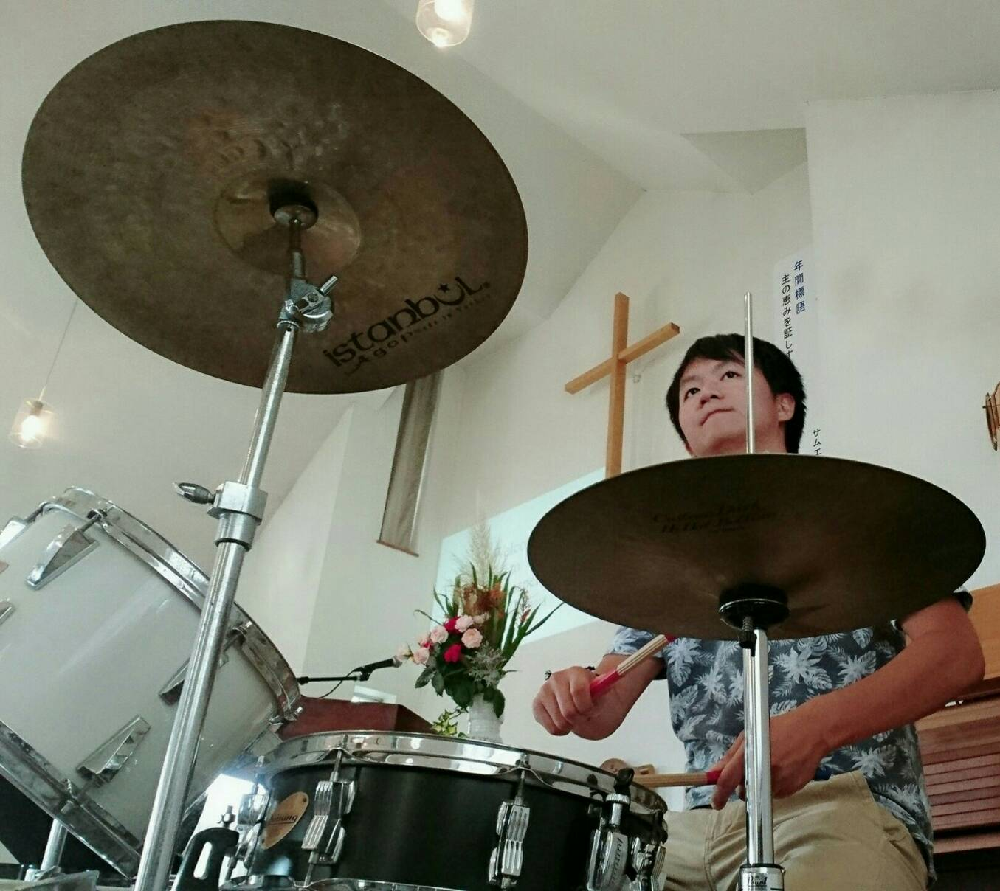

宮下 剛夫

| 研究テーマ | 放射光を用いた遷移金属酸化物の電子構造の研究 |
|---|---|
| 出身 | 兵庫 |
| 卒業論文題目 | Co置換銅酸化物高温超伝導体の高分解能角度分解光電子分光 |
| 修士論文題目 | 銅酸化物高温超伝導体の電子構造におけるCo置換効果の研究 |
| 原著論文 | 1. T. Miyashita, H. Iwasawa, T. Yoshikawa, S. Ozawa, H. Oda, T. Muro, H. Ogura, T. Sakami, F. Nakamura, and Akihiro Ino "Emergence of low-energy electronic states in oxygen-controlled Mott insulator Ca2RuO4+δ" T. Miyasyita et al., Solid State Commun. 326, 114180 (2021). |
| 国際学会 | 8. 学会名：The Second International Workshop Emergent Condensed-Matter Physics ECMP2019 題目： Angle-Resolved Photoemission Study of Energy Gap of Bi2Sr2Ca(Cu1-xCox)2O8 場所：Higashi-Hiroshima Arts & Culture Hall "Kurara", Japan (2019.3) ポスター発表 7. 学会名：APS March Meeting 2019 題目：Co-substitution effect on electronic structure of high-Tc cuprate superconductor, Bi2Sr2Ca(Cu1-xCox)2O8 場所：Boston Convention and Exhibition Center (BCEC), the USA (2019.3) 口頭発表 6. 学会名：2018 Japan-Korea Student Workshop 題目：Angle-resolved Photoemission Study of Co-substitution Effect on High-Tc Cuprate Superconductor 場所：Hiroshima Univ., Japan (2018.11) 口頭発表 5. 学会名：International Workshop on Trends in Advanced Spectroscopy in Materials Science (TASPEC) 題目：Angle-Resolved Photoemission Study of High-Tc Cuprate Superconductor Bi2Sr2Ca(Cu1-xCox)2O8+δ 場所：Hiroshima Univ., Japan (2018.10) 口頭発表 4. 学会名：The 22nd Hiroshima International Symposium on Synchrotron Radiation 題目：Angle-Resolved Photoemission Study of Co-Substitution Effect in the Electronic Structure of High-Tc Cuprate Superconductor 場所：Hiroshima Univ., Japan (2018.3) ポスター発表 3. 学会名：The 17th International workshop on strong correlations and angle-resolved photoemission spectroscopy (CORPES17) 題目：Laser-based high-resolution angle-resolved photoemission study of Co-substituted high-Tc cuprate superconductor 場所：JMS Aster Plaza, Japan (2017.7) ポスター発表 2. 学会名：The 21st Hiroshima International Symposium on Synchrotron Radiation 題目：Laser-based high-resolution angle-resolved photoemission study of Bi2Sr2Ca(Cu1-xCox)2O8+δ 場所：Hiroshima Univ., Japan (2017.3) ポスター発表 1. 学会名：2016 Japan-Korea Student Workshop 題目：High-Resolution Angle-Resolved Photoemission Study of Co-Substitution Effect in High-Tc Cuprate Superconductor 場所：Hiroshima Univ., Japan (2016.11) 口頭発表 |
| 国内学会 | 4. 学会名：日本物理学会 2020年・秋季大会 題目：酸素量制御したルテニウム酸化物Ca2RuO4+δの軟X線角度分解光電子分光 場所：熊本大学（2020.9, オンライン） 口頭発表 3. 学会名：日本物理学会 2018年・秋季大会 題目：高分解能角度分解光電子分光を用いたBi2212の電子構造におけるCo置換効果の研究 場所：同志社大学 (2018.9) 口頭発表 2. 学会名：日本物理学会 2017年・秋季大会 題目：高分解能角度分解光電子分光によるBi2212の超伝導ギャップにおけるCo置換効果の研究 場所：岩手大学 (2017.9) ポスター発表 1. 学会名：日本物理学会 2016年・秋季大会 題目：Co置換Bi2212高温超伝導体の高分解能角度分解光電子分光 場所：金沢大学 (2016.9) ポスター発表 |
| 受賞歴 | 2. 賞名：Student Poster Award The Second International Workshop Emergent Condensed-Matter Physics ECMP2019 受賞年月：2019.3 1. 賞名：Excellent Presentation Award 2018 Japan-Korea Student Workshop 受賞年月：2018.11 |